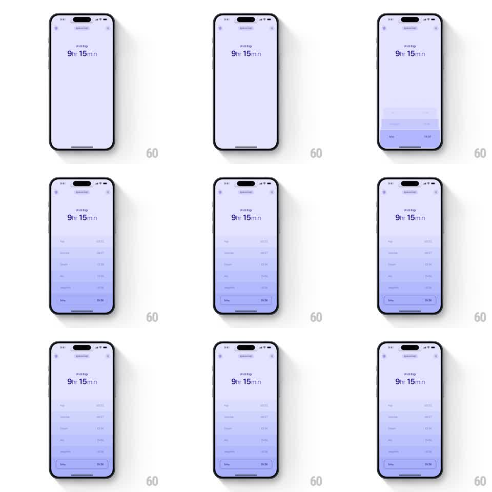

Media
Frame-by-frame

Rebuild this interaction 1:1: Vakitler's prayer-times list - on a soft lavender screen, the day's prayer rows fade in and slide up one by one beneath the countdown header.

Rebuild this interaction 1:1: Vakitler's prayer-times list - on a soft lavender screen, the day's prayer rows fade in and slide up one by one beneath the countdown header. ## Integration Integration: stack-agnostic spec - springs given as stiffness/damping, timed motions as duration + curve; map every value to your framework and animation library of choice. ## Scene Pale lavender screen. Top: a location pill and settings icons. Header: "Until Fajr" over a large "9hr 15min" countdown. Below: the prayer list - Fajr, Sunrise, Dhuhr, Asr, Maghrib, Isha - each a rounded row with the prayer name left and its time right; the upcoming prayer's row is tinted a deeper lavender. ## Motion spec Pattern: staggered fade-in and slide-up list entrance. - The header fades in first (300ms). - Rows enter bottom-to-top of the visible stack, in list order: each fades 0 -> 1 and rises 16pt (350ms, ease-out), staggered 90ms apart. - The upcoming-prayer row (Isha) enters with the same motion but settles with a gentle scale settle (1.02 -> 1, 150ms) and its deeper tint fading in (250ms). - Row times count/settle: digits fade in 100ms after the row's background. ## Calibration - The stagger is calm and even - this is a devotional app, no bounces anywhere. - The highlighted row stands out by tint only; same size, same type as the rest. ## Reduced motion All rows fade in together (300ms), no slide, no stagger. ## Don't miss - The countdown header is the visual anchor: largest type on screen, perfectly still during the list's entrance. - Lavender stays soft and uniform; row tints are one step deeper, not a different hue.